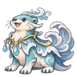

No.004
シズルア
潮 進化形
月光を織り込んだ尾を持つ。荒れる水面をひと撫でするだけで静める。
基本データ
| 図鑑番号 | No.004 |
|---|---|
| タイプ | 潮タイプ |
| 進化 | Lv.32でシズナリアに進化 |
| 入手方法 | シズクがLv.8で進化すると出会えます。 |
Lv.50の能力値
| HP | 292 | |
|---|---|---|
| 攻撃 | 169 | |
| 防御 | 122 | |
| 特攻 | 173 | |
| 特防 | 120 | |
| 素早さ | 115 | |
| 命中 | 99 | |
| 回避 | 96 |
冒険中の能力値はレベルに応じて上がります。オンライン対戦の通常レンタルはLv.50で統一されます。
覚える技
| 技 | タイプ | 分類 | 威力 | 命中 | PP | 効果 |
|---|---|---|---|---|---|---|
| 潮のカーテン | 潮 | 特殊 | 35 | 92 | 15 | 寄せる潮の力を借りる。 |
| しずくの矢 | 潮 | 物理 | 24 | 100 | 30 | 澄んだ水滴を勢いよく飛ばす。 |
| 霧のまもり | 潮 | 防御 | — | — | 15 | 次に受けるダメージを半分にする。 |
| 氷柱の調べ | 潮 | 物理 | 30 | 95 | 20 | 硬い氷の響きで守りを貫く。 |
進化の系譜
 シズクLv.8 ▶
シズクLv.8 ▶- シズルアLv.32 ▶

シズナリア
タイプ相性
潮タイプの技は灯タイプに強く（1.5倍）、芽タイプの技を受けると効果が大きくなります。同じタイプの技を使うと威力が1.15倍になります。